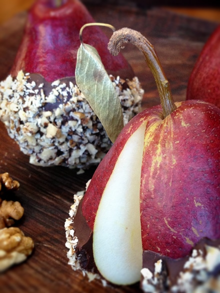

Walnut Roca Crusted Red Anjou Pears

~ raw, vegan, gluten-free ~
Ah, the joy of fruit, with it you can create such elegant desserts. Eating a perfectly ripe pear with aplomb (teaching myself new words :) can be a delicious experience. Add a little chocolate and crushed walnuts, and you have something to rejoice about!
Red Anjou pears are much like their green counterparts in all respects other than color. Their shape, flavor, and texture are similar, but it’s their deep, rich, maroon color that sets this variety apart.
Red Anjous show an only a slight change in color as they ripen. The best way to test for ripeness is the thumb test: gentle thumb pressure near the stem will yield slightly when the pear is ripe. And this is exactly when we want to use it for this recipe. They must be beautifully ripe!
If you purchase the pears when they are hard, it may take several days before they are ready to eat. So this will require some planning ahead. However, it will be well worth the wait. Red Anjous develop a mild, sweet flavor with a very smooth texture and abundant juices when ripe.
The more you work with raw, fresh, living foods, the more you start to realize that the ripeness of the fruits or veggies, can make or break a dish. With a ripe Anjou pear, the skin will be a dark red to crimson color, the flesh creamy white, aromatic, juicy, sweet, slightly acidic, a hint of citrus, with buttery and a smooth texture. The poetry of nature. :)
Pears are an excellent source of dietary fiber and a good source of vitamin C, a proven anti-oxidant. Pears also offer potassium, contain no saturated fat, sodium, or cholesterol. A medium-sized pear has about 100 calories. So, now you can rest easy knowing that this little nutrient-packed fruit is the perfect vessel for chocolate and walnuts. :) Raw cacao in itself is filled with magnesium, calcium, sulfur, zinc, iron, copper, potassium, and manganese, polyphenols called flavonoids, vitamins: B1, B2, B3, B5, B9, E, protein, AND fiber. Give me a second while I catch my breath. Shew!
But then there are the walnuts which contain the highest amount of alpha-linolenic acid (ALA), the plant-based omega-3 essential fatty acid. They also provide a convenient source of protein, fiber, and antioxidants. I don’t know about you, but I know feel, this dessert is one that a person can really feel good about!
I created this treat for Bob and me, so the serving size yields only 2. If I could, I would have modified the recipe to accommodate all of you, but that would yield over 7,000 servings, and to be honest… I don’t have enough walnuts on hand. Haha So, I guess what I am saying is that you can tailor this recipe to feed as many as you wish, just adjust the ingredients. :)

Ingredients:
yields 2
Preparation:
- Wash and completely dry the pears. Make sure that there isn’t any water on them. Water and chocolate do not mix!
- Prepare the melted chocolate and have a bowl that is large enough for the base of the pear to sit in.
- Hand chop the walnuts you end up with even-sized bits. Place in a small bowl that is also large enough for the bottom of the pear to sit in.
- Dip the base of the pear into the bowl, holding onto the stem, roll it around to create a chocolate coating that is about 1/2 way up the pear. Remove the excess chocolate from the bottom, so it doesn’t puddle while drying.
- Place the chocolate covered pear in the bowl of nuts and using the same technique as with the chocolate, coat with the walnuts
- Place on wax paper to dry.
- Slice and serve!
© AmieSue.com